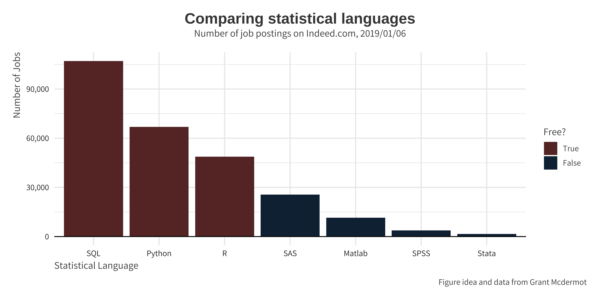
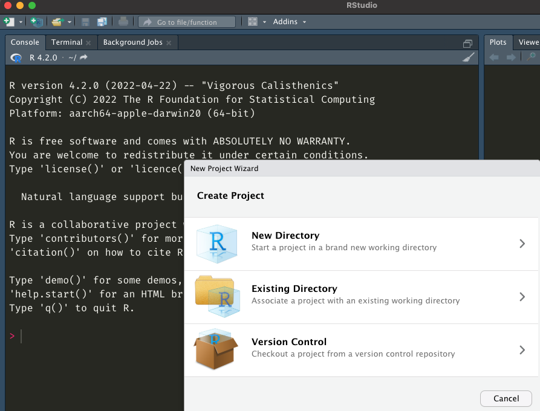
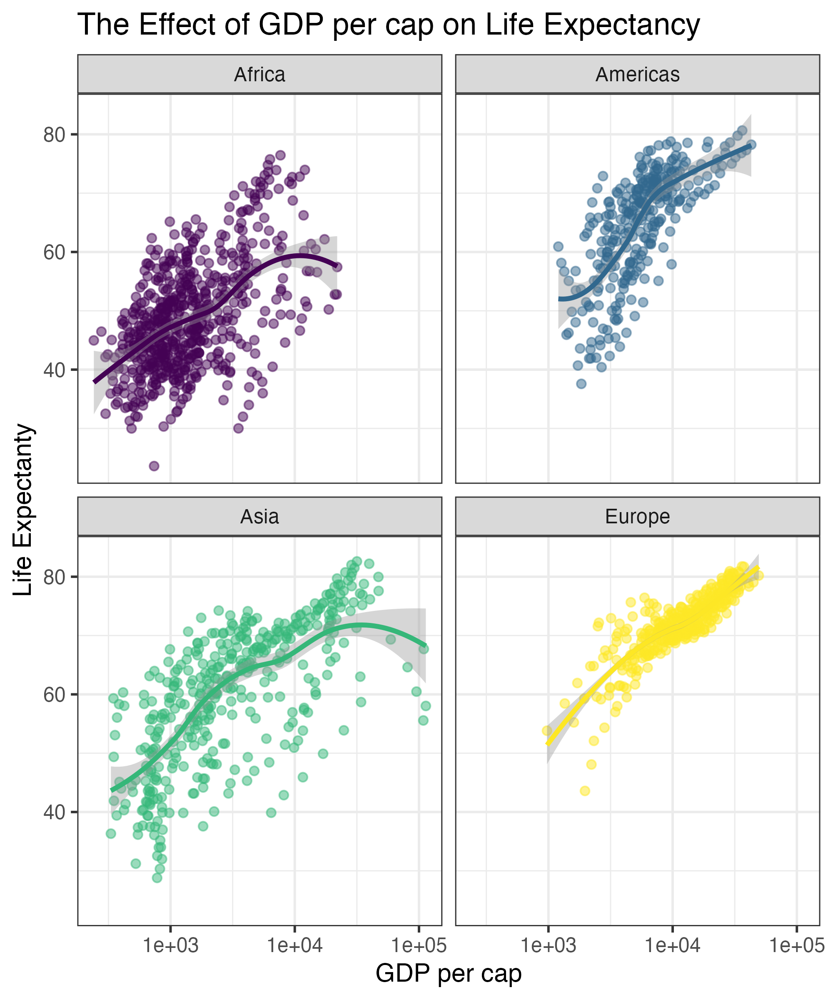

[1] "/Users/josh/Dropbox/Research-Data-Services-Workshops/research-data-services-r-workshops/slides"Getting Started in ggplot
Josh Allen
Department of Political Science at Georgia State University
8/29/22
Why Use R?
Navigating RStudio
project files are here
imported data
shows up here
code can go here
Navigating RStudio
project files are here
imported data
shows up here
code can go here
Setting Your Working Directory
Your working directory is where all your files live
You may know where your files are…
But R does not
If you want to use any data that does not come with a package you are going to need to tell R where it lives
Cats and Boxes

You can put a box inside a box
You can put a cat inside a box
You can put a cat inside a box inside of a box
You cannot put a box inside a cat
You cannot put cat in a cat
Setting Your Working Directory(cont)
How To Make Your Life Easier
This is the working directory on my personal computer
[1] "/Users/josh/Dropbox/Research-Data-Services-Workshops/research-data-services-r-workshops/slides"working directory of my office computer
"/Volumes/6TB Raid 10/Dropbox/Research-Data-Services-Workshops/research-data-services-r-workshops/3800-Guest-Lecture"
R Projects
Objects
Everything is an object
Everything has a name
You do stuff with functions
Packages(i.e. libraries) are homes to pre-written functions.
- You can also write your own functions and in some cases should.
Install and loading packages
- Console or Script
install.packages("package-i-need-to-install")- In the case of multiple packages you can do
install.packages(c("Packages", "I", "don't","have"))
- In the case of multiple packages you can do
- RStudio Click the “Packages” tab in the bottom-right window pane. Then click “Install” and search for these two packages.

Install and load(cont.)
Once the packages are installed we need load them into our R session with the library() function
Notice too that you don’t need quotes around the package names any more.
R Some Basics
Basic Maths
- R is equipped with lots of mathematical operations
Logical Statements & Booleans
| Test | Meaning | Test | Meaning |
|---|---|---|---|
x < y
|
Less than |
x %in% y
|
In set |
x > y
|
Greater than |
is.na(x)
|
Is missing |
==
|
Equal to |
!is.na(x)
|
Is not missing |
x <= y
|
Less than or equal to | ||
x >= y
|
Greater than or equal to | ||
x != y
|
Not equal to | ||
x | y
|
Or | ||
x & y
|
And |
Booleans and Logicals in Action
Logicals, Booleans, and Precedence
Rlike most other programming languages will evaluate our logical operators(==,>, etc) before our booleans(|,&, etc).
What’s happening here is that R is evaluating two separate “logical” statements:
1 > 0.5, which is is obviously TRUE.2, which is TRUE(!) because R is “helpfully” converting it toas.logical(2).It is way safer to make explicit what you are doing.
If your code is doing something weird it might just be because of precedence issues
- See R Cookbook 2.11
Other Useful Tricks
Value matching using %in%
To see whether an object is contained within (i.e. matches one of) a list of items, use %in%.
Cool Now What?
While this is boring it opens up lots
We may need to set up a group of tests to do something to data.
We may need all this math stuff to create new variables
However we need to Assign them to reuse them later in functions.
- Including datasets
Everything is an Object
Assignment
- The most popular assigment operator in R is
<-which is just<followed by-- read aloud as “gets”
- You can also use
->but this is far less common and makes me uncomfortable
=is also a valid assignment operator and works just like<-
Navigating Objects in R
Importing Data
You have the option of pointing and clicking via import dataset
This is a common error you will get
Error in file(file, "rt"): cannot open the connectionError in file(file, "rt"): cannot open the connection- This happens most often when
- the file name is spelled wrong
- the file is in a subdirectory or your working directory is not set correctly
Fixing the error
Your Turn
Create an object with what ever you want in it
read in the data included to the website using
read.csv- What happens when you do not assign the dataset?
assign the
penguinsdataset to an object named penguinsuse
View,head, andtailto inspect the datasetusing
install.packages()install ggplot2
04:00
Our Data
| species | island | bill_length_mm | bill_depth_mm | flipper_length_mm | body_mass_g | sex | year |
|---|---|---|---|---|---|---|---|
| Adelie | Torgersen | 39.1 | 18.7 | 181 | 3750 | male | 2007 |
| Adelie | Torgersen | 39.5 | 17.4 | 186 | 3800 | female | 2007 |
| Adelie | Torgersen | 40.3 | 18.0 | 195 | 3250 | female | 2007 |
| Adelie | Torgersen | NA | NA | NA | NA | NA | 2007 |
| Adelie | Torgersen | 36.7 | 19.3 | 193 | 3450 | female | 2007 |
| Adelie | Torgersen | 39.3 | 20.6 | 190 | 3650 | male | 2007 |
$ Indexing
A really useful way of indexing in R is referencing stuff by name rather than position. - The way we do this is through the $
$ in action
This will just subset things
[]has two slots[row,column]
| species | island | bill_length_mm |
|---|---|---|
| Gentoo | Biscoe | 46.1 |
| Gentoo | Biscoe | 50.0 |
| Gentoo | Biscoe | 48.7 |
| Gentoo | Biscoe | 50.0 |
| Gentoo | Biscoe | 47.6 |
| Gentoo | Biscoe | 46.5 |
Exploratory Data Analysis in R
Describing Variables
This depends on what kind of variable it is i.e. continuous, categorical etc
It also depends on what story you need to tell
- Is this confounder a big deal?
- Do we see anticipation of treatment?
- Are there any outliers?
- etc?
Remember R is just a toolbox.
First Cut
species island bill_length_mm bill_depth_mm
Adelie :152 Biscoe :168 Min. :32.10 Min. :13.10
Chinstrap: 68 Dream :124 1st Qu.:39.23 1st Qu.:15.60
Gentoo :124 Torgersen: 52 Median :44.45 Median :17.30
Mean :43.92 Mean :17.15
3rd Qu.:48.50 3rd Qu.:18.70
Max. :59.60 Max. :21.50
NA's :2 NA's :2
flipper_length_mm body_mass_g sex year
Min. :172.0 Min. :2700 female:165 Min. :2007
1st Qu.:190.0 1st Qu.:3550 male :168 1st Qu.:2007
Median :197.0 Median :4050 NA's : 11 Median :2008
Mean :200.9 Mean :4202 Mean :2008
3rd Qu.:213.0 3rd Qu.:4750 3rd Qu.:2009
Max. :231.0 Max. :6300 Max. :2009
NA's :2 NA's :2 Summary with a bigger data frame
studyName Sample Number Species Region
Length:344 Min. : 1.00 Length:344 Length:344
Class :character 1st Qu.: 29.00 Class :character Class :character
Mode :character Median : 58.00 Mode :character Mode :character
Mean : 63.15
3rd Qu.: 95.25
Max. :152.00
Island Stage Individual ID Clutch Completion
Length:344 Length:344 Length:344 Length:344
Class :character Class :character Class :character Class :character
Mode :character Mode :character Mode :character Mode :character
Date Egg Culmen Length (mm) Culmen Depth (mm) Flipper Length (mm)
Min. :2007-11-09 Min. :32.10 Min. :13.10 Min. :172.0
1st Qu.:2007-11-28 1st Qu.:39.23 1st Qu.:15.60 1st Qu.:190.0
Median :2008-11-09 Median :44.45 Median :17.30 Median :197.0
Mean :2008-11-27 Mean :43.92 Mean :17.15 Mean :200.9
3rd Qu.:2009-11-16 3rd Qu.:48.50 3rd Qu.:18.70 3rd Qu.:213.0
Max. :2009-12-01 Max. :59.60 Max. :21.50 Max. :231.0
NA's :2 NA's :2 NA's :2
Body Mass (g) Sex Delta 15 N (o/oo) Delta 13 C (o/oo)
Min. :2700 Length:344 Min. : 7.632 Min. :-27.02
1st Qu.:3550 Class :character 1st Qu.: 8.300 1st Qu.:-26.32
Median :4050 Mode :character Median : 8.652 Median :-25.83
Mean :4202 Mean : 8.733 Mean :-25.69
3rd Qu.:4750 3rd Qu.: 9.172 3rd Qu.:-25.06
Max. :6300 Max. :10.025 Max. :-23.79
NA's :2 NA's :14 NA's :13
Comments
Length:344
Class :character
Mode :character
Getting Some Descriptive Statistics
To grab individual summary statistics we have to use $
- Notice that R is conservative
- Being explicit about how you treat things in R is very important
- To see what arguments a function takes
?functionname
- To see what arguments a function takes
Your Turn
Find the minimum value of
bill_length_mmFind the maximum value of
body_mass_gFind the median value of
flipper_length_mmFind the how many of each penguin species there are
- use table
Bonus: how correlated are
bill_length_mmandbody_mass_g?- hint: use
cor()
- hint: use
Graphing your data
Why visualize your data?
The Dino Strikes

The Tool We Are Going to Use
Today we are going to be learning
ggplotThis is something you have no doubt encountered in the wild
Lots of Organizations Use it
- BBC
- The Economist
- The Athletic
- And so Many More
It is insanely flexible
Moves away from idiosyncracies of plotting syntaxes
How Do We go From?
This
To This
The Grammar of Graphics
“Good grammar is just the first step of creating a good sentence”
| Component | Function | Explanation |
|---|---|---|
| Data |
ggplot(data)
|
The raw data that you want to visualise. |
| Aesthetics |
aes()
|
Aesthetic mappings between variables and visual properties. |
| Geometries |
geom_*()
|
The geometric shapes representing the data. |
| Statistics |
stat_*()
|
The statistical transformations applied to the data. |
| Scales |
scale_*()
|
Maps between the data and the aesthetic dimensions. |
| Coordinate System |
coord_*()
|
Maps data into the plane of the data rectangle. |
| Facets |
facet_*()
|
The arrangement of the data into a grid of plots. |
| Visual Themes |
theme() and theme_*()
|
The overall visual defaults of a plot. |
Where do they go?
Making Plots
Plotting Data
| country | continent | year | lifeExp | pop | gdpPercap |
|---|---|---|---|---|---|
| Afghanistan | Asia | 1952 | 28.801 | 8425333 | 779.4453 |
| Afghanistan | Asia | 1957 | 30.332 | 9240934 | 820.8530 |
| Afghanistan | Asia | 1962 | 31.997 | 10267083 | 853.1007 |
| Afghanistan | Asia | 1967 | 34.020 | 11537966 | 836.1971 |
| Afghanistan | Asia | 1972 | 36.088 | 13079460 | 739.9811 |
| Afghanistan | Asia | 1977 | 38.438 | 14880372 | 786.1134 |
| Afghanistan | Asia | 1982 | 39.854 | 12881816 | 978.0114 |
| Afghanistan | Asia | 1987 | 40.822 | 13867957 | 852.3959 |
| Afghanistan | Asia | 1992 | 41.674 | 16317921 | 649.3414 |
| Afghanistan | Asia | 1997 | 41.763 | 22227415 | 635.3414 |
Here is your shell script
Activity
Add color, size, alpha, and shape aesthetics to your graph.
Be bold be brave! Experiment!
What happens when you add more than one aesthetic?
05:00
How would you make this plot?

Same options different stuff


What Comes With ggplot
[1] "geom_abline" "geom_area" "geom_bar"
[4] "geom_bin_2d" "geom_bin2d" "geom_blank"
[7] "geom_boxplot" "geom_col" "geom_contour"
[10] "geom_contour_filled" "geom_count" "geom_crossbar"
[13] "geom_curve" "geom_density" "geom_density_2d"
[16] "geom_density_2d_filled" "geom_density2d" "geom_density2d_filled"
[19] "geom_dotplot" "geom_errorbar" "geom_errorbarh"
[22] "geom_freqpoly" "geom_function" "geom_hex"
[25] "geom_histogram" "geom_hline" "geom_jitter"
[28] "geom_label" "geom_line" "geom_linerange"
[31] "geom_map" "geom_path" "geom_point"
[34] "geom_pointrange" "geom_polygon" "geom_qq"
[37] "geom_qq_line" "geom_quantile" "geom_raster"
[40] "geom_rect" "geom_ribbon" "geom_rug"
[43] "geom_segment" "geom_sf" "geom_sf_label"
[46] "geom_sf_text" "geom_smooth" "geom_spoke"
[49] "geom_step" "geom_text" "geom_tile"
[52] "geom_violin" "geom_vline" Example(sort of)
Your Turn

02:00
Answer

Your Turn Again
Hint do not supply a Y value

02:00
Your Turn
Make This Density Plot filled by continent
02:00
Complex graph!
Local
Global

Building Plots
Starting with Data and aesthics
Add geom_point
Add geom_smooth

Change Transparency
Adjust scales with scale_x_log10
Add axis labels and title with labs
Add viridis color scale

Differences in Color Scales
Add theme
Facet by Continent
ggplot(gapminder,
aes(x = gdpPercap,
y = lifeExp,
color = continent)) +
geom_point(alpha = 0.5) +
geom_smooth() +
scale_x_log10() +
labs(x = "GDP per cap",
y = "Life Expectanty",
title = "The Effect of GDP per cap on Life Expectancy") +
scale_color_viridis_d() +
theme_bw() +
facet_wrap(vars(continent))Change Theme Options
ggplot(gapminder,
aes(x = gdpPercap,
y = lifeExp,
color = continent)) +
geom_point(alpha = 0.5) +
geom_smooth() +
scale_x_log10() +
labs(x = "GDP per cap",
y = "Life Expectanty",
title = "The Effect of GDP per cap on Life Expectancy") +
scale_color_viridis_d() +
theme_bw() +
facet_wrap(vars(continent)) +
theme(legend.position = "none")
Scales
| Example layer | What it does |
|---|---|
scale_x_continuous()
|
Make the x-axis continuous |
scale_x_continuous(breaks = 1:5)
|
Manually specify axis ticks |
scale_x_log10()
|
Log the x-axis |
scale_color_gradient()
|
Use a gradient |
scale_fill_viridis_d()
|
Fill with discrete viridis colors |
Scales in Action
Scales in Action
Scales in Action
Scales
The scale_*() components control the properties of all the
aesthetic dimensions mapped to the data.
The extensions (*) can be filled by e.g.:
continuous(),discrete(),reverse(),log10(),sqrt(),date()for positionscontinuous(),discrete(),manual(),gradient(),gradient2(),brewer()for colorscontinuous(),discrete(),manual(),ordinal(),area(),date()for sizescontinuous(),discrete(),manual(),ordinal()for shapescontinuous(),discrete(),manual(),ordinal(),date()for transparency

Illustration by Allison Horst
Continuous vs. Discrete in {ggplot2}
Continuous:
quantitative or numerical data
- height
- weight
- age
- counts
Discrete:
qualitative or categorical data
- species
- sex
- study sites
- age group
Continuous vs. Discrete in {ggplot2}
Continuous:
quantitative or numerical data
- height (continuous)
- weight (continuous)
- age (continuous or discrete)
- counts (discrete)
Discrete:
qualitative or categorical data
- species (nominal)
- sex (nominal)
- study site (nominal or ordinal)
- age group (ordinal)
Scales in Action
Coordinates
Your Turn
Change the colors of this density plot
04:00
How I Did It
Facets
| Example layer | What it does |
|---|---|
facet_wrap(vars(continent))
|
Plot for each continent |
facet_wrap(vars(continent, year))
|
Plot for each continent/year |
facet_wrap(…, ncol = 1)
|
Put all facets in one column |
facet_wrap(…, nrow = 1)
|
Put all facets in one row |
facet_wrap
facet_grid
facet_grid
Labels
| Example layer | What it does |
|---|---|
labs(title = “Neat title”)
|
Title |
labs(caption = “Something”)
|
Caption |
labs(y = “Something”)
|
y-axis |
labs(size = “Population”)
|
Title of size legend |
Labels with labs
ggplot(gapminder,
aes(x = gdpPercap,
y = lifeExp,
color = continent,
size = pop)) +
geom_point(alpha = 0.5) +
scale_x_log10() +
labs(title = "Health and wealth grow together",
subtitle = "Data from 2007",
x = "Wealth (GDP per capita)",
y = "Health (life expectancy)",
color = "Continent",
size = "Population",
caption = "Source: The Gapminder Project")Changing the Default Theme
theme_minimal
theme_dark
The theme argument
Has lots and lots of options(94 to be exact)
You can change basically anything you could think of in a plot
- My ggplot theme is basically just a some tweaks to theme arguments
An Example
ggplot(gapminder,
aes(x = gdpPercap,
y = lifeExp,
color = continent,
size = pop)) +
geom_point(alpha = 0.5) +
scale_x_log10() +
labs(title = "Health and wealth grow together",
subtitle = "Data from 1952 to 2007",
x = "Wealth (GDP per capita)",
y = "Health (life expectancy)",
color = "Continent",
size = "Population",
caption = "Source: The Gapminder Project") +
theme_allen_minimal()